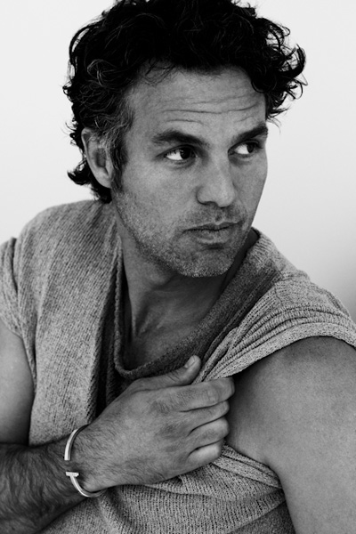

Alex Craven
Chief Executive Officer
Joined the company on Feb 30, 2015
Formerly the COO at Tibana Tea

"Tea is is like life, there is a flavor for everyone.
Alex is a long time tea enthusiast. He has a garden at his home where he grows tea and spends all of his free time. He describes it as "My partner, child, and pet all on one patch of land." He says that there are few people who understand his obsession with the art of brewing. He always remarks that tea is a way of life and not a job or hobby.
Tim Creasy
Chief Technical Officer
Joined the company on January 1, 2006

"People think you can make tea with hot water and leaves. Wrong!"
Tim holds Team Team Tea to the highest standards in the brewing industry. With his background in water treatment and sewage, he knows just how important it is to have good clean water for your tea t be refreshing and invigorating. Don't be fooled by love of perfectly brewed tea, Tim is a family man. He has his own hydroponic garden of tea plants in his manse.
William Marshall Friskics-Warren
Chief Brewing Officer
Joined the company Friday May 13, 2016

"Tea is about family; correction, tea is family."
Marshall's brother, and former CBO here at Team Team Tea, recent passed away in a freak brewing accident. Marshall took up where his brother left off stating that, "Now there is only tea..." Marshall's rabid devotion to the brewing art has spurred a focus on genetically engineering and breeding tea strains to produce the best flavor and aroma possible.
Dan Day
Chief Financial Officer
Co-Founder of Team Team Tea

"If the world love tea like it loves money there would be no war."
Dan is not just a tea lover, but a tea activist. Dan believes that the world would be a more peaceful place if people would only drink tea. While he has no background in finance what so ever, he took up the roll as CFO to help Team Team Tea spread a message of tea, and love, across the world.